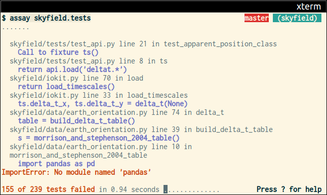

The design of the ‘Assay’
testing framework
2016 January 13
Puget Sound Programming Python
Q:
“Why does that
first crucial test failure
scroll off the screen?”
Timeline
- I press Save
- [I wait]
- I start work on the test failure
Dilemma
Either wait for all tests
to finish, so the terminal
stops scrolling
Or tell the framework to
stop on the first failure,
and lose information
So I started writing Assay
1. the testing of a
metal or ore to determine its
ingredients and quality.
How does Assay let me work faster?
- Runs tests, writes .’s
- On first failure, prints exception
- Stops scrolling!
- Uses the bottom line for status
- vi-style navigate to more exceptions

Having efficient test reporting
introduced another problem
Q:
“Why am I waiting so long
for my tests to start running?”
inotifywait -e CLOSE_WRITE \
-e DELETE_SELF \
path path ...
Testing cycle
Import third-party libraries
Testing cycle
Start Python interpreter
Start Python interpreter
$ time python -c ''
0.02s user 0.00s system 90% cpu 0.031 total
$ strace python -c ''
[1,147 system calls]
Start Python interpreter
Can we avoid it?
Import third-party libraries
Import third-party libraries
$ time python -c 'import sqlalchemy'
0.15s user 0.01s system 96% cpu 0.161 total
$ time python -c 'import pandas'
0.81s user 0.30s system 128% cpu 0.865 total
The savings is starting to add up!
0.031
0.161
0.865
─────
1.057 s
Import your code
Can we advance this arrow forward?
Wait for edit; import A B C D E
import A B C; wait for edit; import D E
Dangers
- You add a new module
- You edit A instead of E
- A says import E
Dangers
- You add a new module
- You edit A instead of E
- A says import E
Penalty?
Having to throw everything away
Q: How can we make
speculative imports safe?
Q: How can we make
speculative imports safe?
fork()
Makes a perfect
identical copy of the
current process
Two easy steps
Step 1
Implement transactions using
a stack of child processes
P
"..." → ...
"begin" → fork() P′
wait() startup
"..." → ... P″
"begin" → fork() startup
"..." → wait() ...
"rollback" → _exit()
"..." → ...
How many transactions / second?
$ python -m assay.benchmark
0.000586 s = 1,707.2 /s:
Pushing, calling, popping a new worker
1,707.2 /s
↓
budget of ~170
transactions per second
budget of ~170
transactions per second
Step 2
A testing framework
should continuously learn
your dependency tree
Given this list of modules:
package/main.py
package/utils.py
<stdlib>/json.py
<stdlib>/re.py
<stdlib>/sys.py
A naive loading order
provides no savepoints
"begin"
"import main" → package/main.py
package/utils.py
<stdlib>/json.py
<stdlib>/re.py
<stdlib>/sys.py
"begin"
Putting utils.py first
provides one savepoint
"begin"
"import utils" → package/utils.py
<stdlib>/json.py
<stdlib>/re.py
<stdlib>/sys.py
"begin"
"import main" → package/main.py
"begin"
Eventually can learn many savepoints
"begin"
"import sys" → <stdlib>/sys.py
"begin"
"import re" → <stdlib>/re.py
"begin"
"import json" → <stdlib>/json.py
"begin"
"import utils" → package/utils.py
"begin"
"import main" → package/main.py
"begin"
There is really a continuum
- You can edit your own code
- You could edit pandas code
- You could edit the Standard Library
- You could edit Assay itself
Your testing framework should always be
learning to reduce time-to-first-result
Assay
- Stable screen output
- Speculative importation
- What else?
Further features
Test functions
def test_math():
assert 1 + 1 == 2
Assert introspection
def test_math():
assert 1 + 1 == 3
ttt.py line 2 in test_math
assert 1 + 1 == 3
AssertionError: 2 != 3
Problem: traditional assert
introspection is slow!
Solution: instead of instrumenting
all code with a custom parser at import,
re-run failures after bytecode rewriting
Parallelism
Auto-detect number of CPU cores
and start n child processes
Dangling files
A test framework
should always alert you
to dangling .pyc files!
Simple test fixtures
Generator fixtures
def posnum():
yield 3
yield 7
yield 100
def test_math(posnum):
assert posnum > 0
Iterable fixtures
posnum = [3, 7, 100]
def test_math(posnum):
assert posnum > 0
Assay
- Stable screen output
- Speculative importation
- Test functions
- Fast assert introspection
- Auto parallel processing
- Dangling *.pyc detection
- Simple test fixtures
Thank you!
@brandon_rhodes